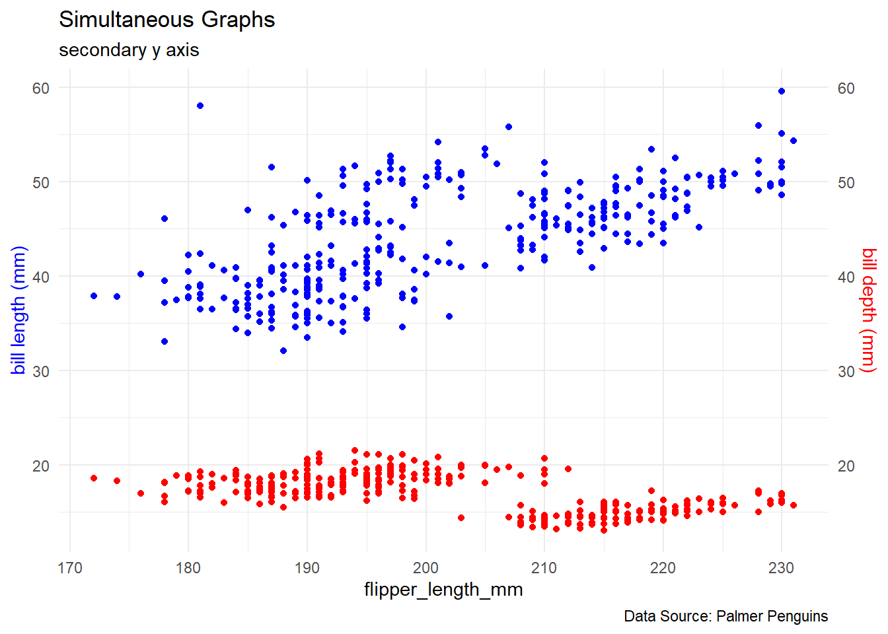

colnames(penguins)[1] "species" "island" "bill_length_mm"
[4] "bill_depth_mm" "flipper_length_mm" "body_mass_g"
[7] "sex" "year" Derek Sollberger
February 12, 2025
penguins |>
ggplot() +
geom_point(aes(x = flipper_length_mm, y = bill_length_mm),
color = "blue") +
geom_point(aes(x = flipper_length_mm, y = bill_depth_mm),
color = "red") +
labs(title = "Simultaneous Graphs",
subtitle = "secondary y axis",
caption = "Data Source: Palmer Penguins") +
scale_y_continuous(
name = 'bill length (mm)',
sec.axis = sec_axis(~ . * 1.0, 'bill depth (mm)')
) +
theme_minimal() +
theme(
axis.title.y = element_text(color = 'blue'),
axis.title.y.right = element_text(color = 'red')
)Warning: Removed 2 rows containing missing values or values outside the scale range
(`geom_point()`).
Removed 2 rows containing missing values or values outside the scale range
(`geom_point()`).
hchart(
object = penguins,
mapping = hcaes(x = flipper_length_mm, y = bill_length_mm),
type = "scatter", color = "blue", yaxis = 1
) |>
hc_add_series(
data = penguins,
mapping = hcaes(x = flipper_length_mm, y = bill_depth_mm),
type = "scatter", color = "red", yaxis = 2
) |>
hc_yAxis_multiples(
list(title = list(text = "Bill Length (mm)", style = list(color = "blue")),
labels = list(style = list(color = "blue"))),
list(opposite = TRUE, title = list(text = "Bill Depth (mm)",
style = list(color = "red")),
labels = list(style = list(color = "red"))))